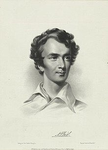

Los Hilos de Monik
Nicholas Trist
Publicado el 15 de agosto de 2020 - 18 tweets - Hilo original en Twitter
1
¿Qué tienen en común Cuba y la actual configuración geográfica de EE.UU.?
A Nicholas Trist.
Cónsul americano en Cuba, esposo de la nieta de Thomas Jefferson y artífice del Tratado de Guadalupe Hidalgo.

2
Trist fue el nombrado como Cónsul de los EE.UU. en Cuba en 1833, tras servir como secretario privado del presidente Andrew Jackson.
Y su tiempo en Cuba fue bien polémico debido a su supuesto apoyo al contrabando de esclavos.
3
Poco tiempo después de llegar, Trist compró el ingenio Flor de Cuba.
Además de los EE.UU., Trist actuaba como Cónsul de Portugal en Cuba y se le acusó de usar su posición para facilitar el tráfico de esclavos.
¿Cómo, exactamente?
4
¿Recuerdas mi hilo anterior? Trist estuvo involucrado.
En 1807 Inglaterra y EE.UU. prohibieron el tráfico trasatlántico de esclavos.
En 1835 España firmó un tratado con Inglaterra, permitiéndole arrestar y juzgar a españoles sospechosos de trata.
5
Sin embargo, el tráfico de esclavos continuó debido a lagunas legales e intereses económicos.
¿Qué papel jugó Trist?
La mayoría de los barcos usados en Cuba para el tráfico de esclavos eran americanos, ensamblados en el puerto de Baltimore.
Y este detalle es muy importante
6
Supuestamente, Trist facilitó la venta (a bajos precios) de estos barcos a esclavistas españoles.
Los barcos salían de La Habana con bandera y papeles americanos. Al cargar los esclavos en Africa, cambiaban a la bandera portuguesa. Así "despistaban" a las patrullas inglesas.
7
Un ejemplo de cómo funcionaba esto es el caso del Venus/ Duquesa de la Braganza. Según cálculos de la época, en un solo viaje dio una ganancia de 200,000 dólares
Según el Comisionado Británico en La Habana, fue Nicholas Trist quien autentificó los papeles de ese viaje.
8
Trist no se quedó callado y le respondió al Comisionado Palmerston con una carta de... ¡260 páginas!
Otro oficial inglés, Richard R. Madden, testificó en el juicio de La Amistad sobre la creación de papeles falsos para hacer pasar a los esclavos africanos por nacidos en Cuba.
9
Todo esto ocasionó una investigación del Congreso de los EE.UU. y que a Trist se le cesara como Cónsul en 1841.
No obstante, no podemos ver a Trist como un ente malvado. Era sureño y defendía la esclavitud. Además, contaba con el apoyo del Capitán General Tacón.
10
Como Cónsul en La Habana, Trist también defendió los derechos de los obreros de EE.UU. (la mayoría irlandeses) contratados en las obras del ferrocarril.
Familias enteras viajaron a Cuba atraídos por generosas ofertas, sólo para encontrarse en condiciones de semi-esclavitud.
11
La Junta de Fomento les ofrecía contratos de 6 meses a 1 año y un pago de 25 pesos mensuales. El costo del pasaje de ida (15 pesos) se les descontaba de sus 2 primeros salarios. Pero no tenían pasaportes y si acumulaban deudas no los dejaban regresar.
12
Sus contratos de trabajo tampoco les permitían buscar otros trabajos una vez en Cuba. Y llegaban ya endeudados con la propia Junta. Resultado: eventualmente muchos de estos irlandeses (y en ocasiones sus viudas) se vieron en Cuba sin recursos para vivir o regresar a EE.UU.
13
Trist pidió a Tacón en varias ocasiones que mediase con la Junta de Fomento para que el pasaje de regreso se les incluyese en el contrato y se les diese un mejor trato.
En una de sus cartas, cuenta que dio de su bolsillo 60 dólares a una viuda para que saldara sus deudas.
14
Luego de dejar de ser Cónsul, se quedó en Cuba varios años. A su regreso en 1845 a EE.UU. Nicholas Trist tuvo el rol por el que pasó a la historia.
El presidente Polk lo mandó a negociar el armisticio con el gobierno de Mexico y la compra de California y Nuevo México.
15
En medio de la guerra entre EE.UU. y México, las negociaciones se extendieron y Polk, descontento con Trist, lo mandó a regresar.
Pero Trist hizo caso omiso y continuó las negociaciones que llevaron a la firma del Tratado de Guadalupe Hidalgo en 1848.
16
Polk estaba furioso: Trist firmó el tratado como representante de EE.UU. a espaldas del gobierno.
No obstante, por 15 millones, Trist obtuvo California, Arizona, Nevada, Utah, Nuevo México y parte de Colorado.
Pero Polk también quería Baja California.
17
Polk ratificó el tratado para terminar la guerra. Pero despidió a Trist y se negó a pagarle el salario que se le debía por el tiempo que estuvo en México.
En 1871 el Congreso de EE.UU. finalmente le pagó a Trist el salario que se le debía.
18
Nicholas Trist murió en 1874 y está enterrado en Alexandria, Virginia.
Gracias a Trist, al presidente James Polk se le conoce que más territorio añadió a los EE.UU. después de Thomas Jefferson.